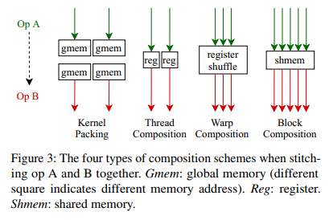
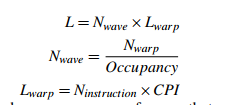
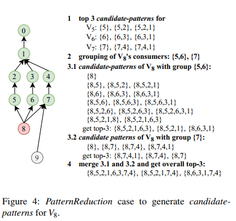
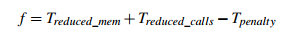

FusionStitch
Key: Fusion Pattern(Fusion Plan); Memory Intensive
2.Motivation and Challenge
2.1 Motivation & Observation
1.As the state-ofthe-art fusion engine, XLA only supports thread-local data transferring for fusion, which relies on index analyzing and recomputation to improve thread locality. A bad case is to put a reduction in the middle of a fusion pattern.(eg. reduce op —> redundantly computation, thus XLA & TVM skip those op)
2.Severe Context Switch Overhead & Large Portion of Memory-intensive Ops
2.2 Challenges
As for applying reuse for a given fusion pattern to generate kernel:
1how to evaluate reuse benefit.
2how to apply reuse. There are two types of data reuse: intra-warp reuse and intra-block reuse.
For a given machine learning model:
1to decide what ops should be fused together.
Main problem:
1forming a fusion pattern by data reuse is not always better than separate kernels.(reuse requires data locality within thread-block or warp, may limit parallelism)
eg. Reuse requires data locality within thread-block or warp, which can potentially limit parallelism. (reduce op); Intra-block reuse may further hurt parallelism as it requires extra shared memory.
2Rule-based approaches, like XLA, fail to find effective fusion plans for varied models. (op partition).
3.Overview
3.1 Data Reuse
FusionStitching widens fusion possibilities by introducing data reuse, a rarely used method in state-of-the-art JIT fusion techniques.
Key: intra-warp reuse & intra-block reuse
eg:
intra-warp reuse —> each warp does reduction for a row of data and stores result in the register of the first lane of the warp. Consumers of the reduction read data with registershuffle from the first lane.
intra-block reuse —>Intra-block reuse does reduction for the row with all threads in the block and stores results in shared memory. Consumers of the reduction read data from shared memory
3.2 FusionStitching System

Key: fusion explorer & code generator
1Fusion explorer: possible fusion patterns that may enjoy data reuse & beam search candidate fusiong plans & selects the best fusion plan from candidate plans with a cost model.
2Code generator: generator gpu kernel for each fusion pattern produced by fusion explorer & divides ops of a fusion pattern into several groups & cost model estimates the performance
Note: a two-level cost model in FusionStitching
1Fusion explorer needs to search in large search space and applies delta-evaluator (5.4), which is fast but less accurate；
2Code generator operates on merged GPU kernels and needs more accurate performance stimation, and thus we apply latency evaluator (4.3) which is more accurate but slower.
4.Code generator
key Component: 4 kernel composition schemes & performace modeling & kernel gen
4.1 Kernel Composition Schemes
four kernel composition schemes indicate main behaviors of common memory intensive ops

1Kernel Packing: reducing context switch overhead of kernel launch and framework scheduling & reduces loop control overheads(aggressive loop fusion—>thread conflict?);
2Thread Composition: fuses dependent ops and transfer intermediate results via registers within a local thread context;
3Warp Composition:fuses dependent operators and apply intra-warp reuse —> register shuffle;
4Block Composition: applies intra-block reuse and unlocks the potential to enable composing non-homogeneous computations into large fused kernels, as long as these computations can communicate within block level.
Note：
1Schemes3&4 are essential to compose a broad range of op kinds with various parallelism characteristics and dependence relationships efficiently with keeping warp/block locality between producers and consumers.
2We do not stitch ops that involves inter-block communications as it results in global memory level synchronization and introduces high overhead.
4.2 kernel gen—> to do
4.3 Kernel Evaluation: Latency-Evaluator

4.4 shared memory optimization
To use as much shared memory as possible while not hurting parallelism, we explore a dataflow based shared memory sharing technique. —> more parallelism & more op in kernel
way: dominance tree algorithm —> reuse previous allocated shared memory
4.5 Computation Reuse Optimizations
reduces thread local redundant calculations
5.Fusion Exploration
5.1 Fusion Problem Definition
Key: the goal of computation fusion problem is to find fusion plan S with maximal, A fusion plan is a set of disjoint fusion patterns S = {P_0, …, P_(k-1)}
i=1∑k**f(P**i)
5.2 Explore Fusion Pattern(*)
Key: recursion & candidate-patterns & group partition & approximate DP process

Pattern Reduction:
an approximate divide-and-conquer process to find top 3 patterns with limited complexity as PatternReduction.

Remote Fusion: try to merge fusion patterns that are not adjacent in the graph after above procedures Constraint: no cyclic dependence & explores fusion patterns that the code generator can proces;
5.3 Generate Overall Fusion Plan(*)
key: beam search —> 3 buffer sets & 4.3 latency evaluator(cost model)
5.4 Fusion Ecaluation: Delta-Evaluator(*)
delta-evaluator to form the score function f —> (for 5.2 fusion pattern)
Key: reduced memory access latency & reduced CPU-GPU context switch overhead & and performance penalty of kernel fusion.

1reduced memory: the amount of memory traffics & the change of memory type to store the intermediate values;
2reduced call: the num of kernels & context switch time;
3penalty: similar to 4.3 latency-evaluator;
...